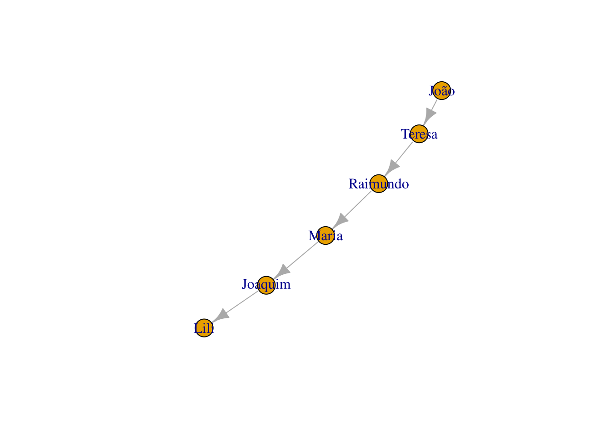

Capítulo 8 Análise Textual (text mining)
CAPÍTULO AINDA EM CONSTRUÇÃO
Conteúdo planejado:
- Introdução à análise textual via computador
- Tipos de abordagens: bag of words, semantic parsing.
- Frequência de termos (bag of words, n-grams, skipgrams, TF-IDF)
- nuvem de palavras (wordclouds), Polarized tag cloud, pyramid plot (em expansão).
- Correlação de palavras, tipos de distâncias, dendogramas
- parts-of-speech tagging
- keyword extraction (em expansão)
- redes de palavras (word networks)
- Inteligência Artificial: clusterização; topic modelling
- Análise de sentimentos.
Orientações para ler este capítulo: Em vários dos códigos aqui presentes, usaremos a notação pacote::função, que dispensa carregar o pacote previamente. Apesar de desnecessária caso o pacote seja carregado anteriormente, ele facilitar saber qual função de que pacote está sendo usada, além de desambiguar, uma vez que há funções de nome idêntico em pacotes diferentes.
Assim, sempre confira se o pacote utilizado no exemplo já está instalado em sua máquina. No Rstudio, basta ir à aba “packages” e fazer a busca na lupa para conferir. Se preferir usar o console do R, use o comando installed.packages()[,1] para listar todos os pacotes instalados, e grep("dplyr", installed.packages()[,1], value=T) para checar se um pacote (no caso, o dplyr) está instalado.
Há também uma listagem com datasets para usar na análise textual, algumas inclusive já no formato R.
8.1 Introdução
A análise computacional de textos é praticamente um sinônimo de Mineração de Texto (text mining) e tem muito em comum com o campo de Processamento de Língua Natural ou Processamento de Linguagem Natural, mas não são exatamente a mesma coisa. Como vimos no capítulo sobre história da análise textual, esta existia antes antes da inteligência artifical e mesmo dos computadores. Há diversas funções nativas do R que usamos na mineração de texto/análise textual, mas também há diversas suítes de pacotes (pacotes com vários pacotes, com várias funções) focados em análise textual com diversas ferramentas, como o tidytext, quanteda (QUantitative ANalysis TExtual DAta), OpenNLP, Rweka, languageR, koRpus, RcmdrPlugin.temis, RKEA (R Keyphrase Extraction Algorithm), tm (Text Mining Package) e qdap (Quantitative Discourse Analysis Package). Estas são algumas das mais famosas suítes de pacotes, com diversas ferramentas, mas há alguns outros pacotes focados em funções mais específicas, como o pacote wordcloud, ggwordcloud (nuvem de palavras para o ggplot2, com mais opções), por exemplo. Há redundância entre estes pacotes, isto é, eles tem funções próprias muito semalhantes às funções de outros pacotes, o que não quer dizer que não existam diferenças significativas.
Há também pacotes em R para análise textual em modo gráfico. Um software bem conhecido de análise textual e que possui interface gráfica é o iramuteq (Interface de R pour les Analyses Multidimensionnelles de Textes et de Questionnaires), criado em 2009 por Pierre Ratinaud. Apesar de ainda ser bastante utilizado, o Iramuteq tem diversas limitações. Vimos um pouco sobre o RCommander. Há um plugin para ele dedicado à análise textual, o RcmdrPlugin.temis. Porém, sua última atualização ocorreu em 2018.
Dicas
- lista com diversos pacotes R, relacionados à Processamento de Linguagem Natural. Lista extensa, porém desatualizada.
8.2 Abordagens: saco de palavras (bag of words) e análise semântica (semantic parsing)
Na análise textual podemos analisar levando ou não em consideração a ordem das palavras ou sua função gramatical. Se o ordenamento ou a função das palavras não é importante, e queremos saber, por exemplo, apenas a frequência de termos, então faremos uma abordagem tipo “saco de palavras” (bag of words). Se precisamos saber as classes gramaticais, então a ordem das palavras é importante. Vamos começar os exemplos com um pacote que pega dados do Google Ngram e nos retorna frequência de termos longitudinalmente, com base de dados do Google Books.
8.3 Abordagem Bag of words
Na abordagem de “saco de palavras” (bag of words) a ordem dos termos não importa, bem como geralmente não importa a sua classe gramatical.
8.3.1 Frequência de palavras/termos e Ngrams
Numa abordagem do tipo saco-de-palavras, a abordagem mais simples, mas sempre útil, é verificar a frequência de certos termos. Apesar de simples, análises mais sofisticadas podem começar com a análise de frequência e partir para abordagens mais sofisticadas.
- aprendizado instrumental de uma língua, ao identificar as palavras mais frequentes em certa área do conhecimento.
- detecção de língua
- detecção de termos mais frequentes em uma busca
- identificação de palavras compostas
8.3.1.1 n-gram: explicando o conceito
Se partirmos do exemplo da frase “Ivo viu a uva” teremos
| unigram | N=1 | “a” “viu” “Ivo” “uva” |
| bigrams | N=2 | “a uva” “Ivo viu” “viu a” |
| trigrams | N=3 | “Ivo viu a” “viu a uva” |
| ngram=4 | N=4 | “Ivo viu a uva” |
| … | … | … |
Quando o N passa de 3, chamamos de ngram e seu valor. Agora um exemplo com o R. Primeiro veremos exemplos com o Google Ngram, que é mais simples, e depois montaremos nosso próprio ngram.
8.3.1.2 GoogleNgrams
A Google pegou sua enorme base de dados dos milhares de livros do Google Books e extraiu os termos mais frequentes, e os colocou disponível para consulta no site Goolge Books Ngram Viewer. O Google Ngrams facilitou a busca por ngrams nesta base de dados, naquilo que chamavam de “culturonomics”. O nome não pegou, a ferramenta tem suas limitações, mas ainda assim pode ser bem útil. A base de dados possui 5.2 milhões de livros, cerca de 4% de todos os livros já publicados. Para mais informações sobre a base de dados e sobre o GoogleNgram no site. Tanto o Python (com o get-ngrams) como o R (ngramr) possuem pacotes que usam os dados do Google Ngram.
Instalando o pacote ngramr
install.packages('ngramr')Carregando os pacote
library(ngramr)E um exemplo de uso
ng <- ngramr::ngram(c("Max Weber", "Émile Durkheim"), year_start = 1890)
ggplot2::ggplot(ng, aes(x=Year, y=Frequency, colour=Phrase)) +
geom_line()
Um exemplo da página do ngramr no Github com mais opções, usando a função ggram() no ngramr, que pega dados do GoogleNgram e plota os dados com o ggplot2:
ggram(c("monarchy", "democracy"), year_start = 1500, year_end = 2000,
corpus = "eng_gb_2012", ignore_case = TRUE,
geom = "area", geom_options = list(position = "stack")) +
labs(y = NULL)
É possível mudar entre diferentes corpus, que neste caso representam as diferentes línguas, como “eng_us_2019”, “eng_gb_2019”, “chi_sim_2019”, “fre_2019”, “ger_2019”, “heb_2019”, “ger_2012”, “spa_2012”, “rus_2012”, “ita_2012”. Para ver todos os corpus disponíveis veja no site busque a sessão “Corpora”. Infelizmente, não há corpus em português no Google Ngram.
classicos = c("Max Weber", "Émile Durkheim", "Karl Marx", "Gabriel Tarde", "Georg Simmel")
ggram(classicos, year_start = 1980, year_end = 2000,
# Para mudar lingua, mude o corpus
# ignore case: se diferencia maiúsculo de minúsculo
corpus = "fre_2019", ignore_case = TRUE,
# tipo de grafico em geom
geom = "line", geom_options = list()) +
# labs: label do eixo y
labs(y = NULL) 
Dicas Ngramr:
- Site do Books Ngram Viewer explicando seus parâmetros.
- PDF com a documentação do ngramr
- Instalação/Primeiros passos com o Ngramr na página do Github do ngramr
- Um projeto similar ao Google Ngram - inclusive usando parte do mesmo pessoal - é o bookworm:HalthiTrust do projeto Halthi Trust-Digital Livrary, com muito mais línguas, inclusive o português e mais opções de busca.
8.3.1.3 N-grams no R
library(ngram)
##
## Attaching package: 'ngram'
## The following object is masked from 'package:ngramr':
##
## ngramVamos pegar um trecho de Alfred Shutz.
txt="A Fenomenologia busca o início real de todo pensamento filosófico... Seu lugar é além - ou melhor, antes - de todas as distinções entre realismo e idealismo."Vamos quebrar o texto em ngrams. Geralmente usa-se valores entre 1 e 3.
ng <- ngram::ngram(txt,
# n = valor do ngram
n=3)
# imprimindo o objeto que criamos, que mostra o total de ngrams
ng
## An ngram object with 25 3-grams
# imprimindo os ngrams gerados.
ngram::get.ngrams(ng)
## [1] "além - ou" "início real de"
## [3] "- de todas" "antes - de"
## [5] "busca o início" "entre realismo e"
## [7] "o início real" "A Fenomenologia busca"
## [9] "distinções entre realismo" "lugar é além"
## [11] "as distinções entre" "de todo pensamento"
## [13] "filosófico... Seu lugar" "é além -"
## [15] "- ou melhor," "de todas as"
## [17] "Fenomenologia busca o" "melhor, antes -"
## [19] "todo pensamento filosófico..." "todas as distinções"
## [21] "ou melhor, antes" "realismo e idealismo."
## [23] "real de todo" "Seu lugar é"
## [25] "pensamento filosófico... Seu"Diversos outros pacotes::funções fazem a quebra em ngrams, como RWeka::NGramTokenizer ou o quanteda.
A função de ngram do quanteda tem a vantagem de poder definir um escopo de valores de ngram de uma vez, podendo gerar unigramas, bigramas e trigramas com um só comando. Em outros pacotes isto é possível apenas com pós processamento.
A quebra do texto em ngrams faz mais sentido quando, com eles, observamos os termos mais repetidos. Isso é o que vamos fazer a seguir. Num exemplo mais prático, fomos até o site gutenberg (site com vários livros gratuitos) e pegamos o link para o txt do livro “O Príncipe” de Maquiavel, em inglês.
# link para o livro "The Prince" de Maquiavel.
url.prince = "https://www.gutenberg.org/files/1232/1232-0.txt"
# carregando o url num objeto R
maquiavel <- readLines(url(url.prince))Observando a estrutura do objeto “maquiavel” que acabamos de criar:
# Como o objeto importado está como um vetor com vários elementos:
str(maquiavel)
## chr [1:5188] "The Project Gutenberg eBook of The Prince, by Nicolo Machiavelli" ...
# vemos que é um vetor com 5.188 itens. Precisamos transformar estes vários vetores em um só elemento com o comando
# paste0(var, collapse = " ")
maquiavel2 <- paste(maquiavel, collapse = " ")Por hora, usaremos o pacote tradicional ngram, escrito em C, e por isso, rápido.
Podemos fazer a sumarização (summarizing) obtendo a frequência de vezes que um ngram apareceu no texto, bem como também a frequência relativa (proporcional) com a função ngram:: get.phrasetable, que retorna um data frame. Rode o ngram com diferentes valores para ver qual deles ertorna resultados mais informativos do conteúdo.
prince_ngrams <- ngram::get.phrasetable(ngram::ngram(maquiavel2, n = 3))
# restringindo aos trigramas mais frequentes
prince_ngrams[1:16,]
## ngrams freq prop
## 1 he did not 20 0.0003770526
## 2 it is necessary 20 0.0003770526
## 3 in order to 19 0.0003582000
## 4 the King of 19 0.0003582000
## 5 Project Gutenberg-tm electronic 18 0.0003393473
## 6 ought to be 18 0.0003393473
## 7 in such a 18 0.0003393473
## 8 prince ought to 18 0.0003393473
## 9 so as to 17 0.0003204947
## 10 that it was 15 0.0002827894
## 11 those who have 15 0.0002827894
## 12 if he had 15 0.0002827894
## 13 for him to 14 0.0002639368
## 14 the Project Gutenberg 14 0.0002639368
## 15 such a way 14 0.0002639368
## 16 the death of 13 0.0002450842Dicas
Sugestão de leitura
- JURAFSKY, Dan.; MARTIN, James H. cap.3 N-gram Language Models
- Manual do pacote ngram
8.4 Nuvem de palavras
Vários pacotes fazem as chamadas nuvem de palavras no R. Um deles é o wordcloud, que além de fazer nuvens de palavras, também é capaz de fazê-lo comparando documentos,
Em sua forma mais simples
texto_tocqueville <- "Em nosso tempo, a liberdade de associação tornou-se uma garantia necessária contra a tirania da maioria. Nos Estados Unidos, quando uma vez um partido se toma dominante. todo o poder público passa para as suas mãos; seus amigos particulares ocupam todos os empregos e dispõem de todas as forças organizadas. Como os homens mais distintos do partido contrário não podem atravessar a barreira que os separa do poder, é preciso que possam se estabelecer fora; é preciso que a minoria oponha sua força moral inteira ao poderio material que a oprime. Opõe-se, pois, um perigo a um perigo mais temível. A onipotência da maioria parece-me um risco tão grande para as repúblicas americanas que o meio perigoso que se usa para limitá-la parece-me, ainda assim, um bem.
Exprimirei aqui um pensamento que lembrará o que disse em outra parte a respeito das liberdades comunais: não há país em que as associações sejam mais necessárias, para impedir o despotismo dos partidos ou a arbitrariedade do príncipe, do que aquele em que o estado social é democrático. Nas nações aristocráticas, os corpos secundários formam associações naturais que detêm os abusos de poder. Nos países em que semelhantes associações não existem, se os particulares não podem criar artificial e momentaneamente alguma coisa que se lhes assemelhe, não percebo mais nenhum dique contra nenhuma sorte de tirania, e um grande povo pode ser oprimido impunemente por um punhado de facciosos ou por um homem.
... Não podemos dissimular que a liberdade ilimitada de associação, em matéria política, é, de todas as liberdades, a última que um povo pode suportar. Se ela não o faz cair na anarquia, o faz tocá-la por assim dizer a cada instante. Essa liberdade, tão perigosa, oferece porém num ponto algumas garantias: nos países em que as associações são livres, as sociedades secretas são desconhecidas. Na América, há facciosos, mas não conspiradores."E para criar uma nuvem de palavras simples, basta usar o comando:
wordcloud::wordcloud(texto_tocqueville)
## Warning in tm_map.SimpleCorpus(corpus, tm::removePunctuation): transformation
## drops documents
## Warning in tm_map.SimpleCorpus(corpus, function(x) tm::removeWords(x,
## tm::stopwords())): transformation drops documents
wordcloud::wordcloud(texto_tocqueville,
# número mínimo de repetições que uma palavra tem de ter para entrar no gráfico
min.freq = 2,
# cores, do menos frequente ao mais frequente
colors = c("royalblue","blue", "darkblue"))
## Warning in tm_map.SimpleCorpus(corpus, tm::removePunctuation): transformation
## drops documents
## Warning in tm_map.SimpleCorpus(corpus, function(x) tm::removeWords(x,
## tm::stopwords())): transformation drops documents
Vemos que algumas palavras frequentes não nos dizem muita coisa, como “que”, “nos”, “para”. Como queremos apreender algo do sentido do texto com a nuvem de palavras, seria interessante remover tais termos pouco significativos, as chamadas “palavras vazias” ou “stopwords”.
8.5 Remoção de palavra vazia (stopwords)
Ao analisarmos texto, o mais frequente são palavras bem pouco informativas, como artigos “o”, “a” “os”, “as”. Para termos uma noção melhor removemos as chamadas “stopwords”.
manifesto <- "A História de toda a sociedade até hoje é a história da luta de classes."
# criamos uma pequena lista de stopwords
minhas_sw <- c("a","o", "e", "da", "de", "do")
# transformando o texto em vetor
manif_vetor <- manifesto %>%
# convertendo o texto todo para minúsculo
tolower %>%
# quebrando o texto em vetores
strsplit(., " ") %>%
# o comando strplit retorna lista. Vamos forçar para retornar como vetor char
unlist
manif_vetor
## [1] "a" "história" "de" "toda" "a" "sociedade"
## [7] "até" "hoje" "é" "a" "história" "da"
## [13] "luta" "de" "classes."Por se tratar de vetor, podemos usar comando tradicionais, com os operadores ! que indica negação, e %in% que checa se algo está contido em um vetor.
manif_vetor[!(manif_vetor) %in% minhas_sw]
## [1] "história" "toda" "sociedade" "até" "hoje" "é"
## [7] "história" "luta" "classes."Explicando:
(manif_vetor) %in% minhas_swcheca se itens de “manif_vetor” estão contidos em “minhas_sw”. Retorna um booleanoo de “TRUE” e “FALSE”.!inverte o comando anterior, checando agora quais itens de “manif_vetor” não estão contidos em “minhas_sw”, também retornando um vetor com booleanos de “TRUE” e “FALSE”.- Para obter os valores (as palavras), jogamos esta fórmula anterior dentro de “manif_vetor[fórmula_anterior]”.
As stopwords costumam ser as mesmas. E se já houvesse uma lista pronta? Existe. É possível encontrar listas prontas na internet, mas diversas funções no R já incluem em si tais listas. Para ver a lista padrão no R, use:
library(tm, quietly = T)# pegando apenas as primeiras 20 stopwrods em inglês
tm::stopwords("en") %>% head(.,20)
## [1] "i" "me" "my" "myself" "we"
## [6] "our" "ours" "ourselves" "you" "your"
## [11] "yours" "yourself" "yourselves" "he" "him"
## [16] "his" "himself" "she" "her" "hers"
# vendo a lista em português
tm::stopwords("pt")
## [1] "de" "a" "o" "que" "e"
## [6] "do" "da" "em" "um" "para"
## [11] "com" "não" "uma" "os" "no"
## [16] "se" "na" "por" "mais" "as"
## [21] "dos" "como" "mas" "ao" "ele"
## [26] "das" "à" "seu" "sua" "ou"
## [31] "quando" "muito" "nos" "já" "eu"
## [36] "também" "só" "pelo" "pela" "até"
## [41] "isso" "ela" "entre" "depois" "sem"
## [46] "mesmo" "aos" "seus" "quem" "nas"
## [51] "me" "esse" "eles" "você" "essa"
## [56] "num" "nem" "suas" "meu" "às"
## [61] "minha" "numa" "pelos" "elas" "qual"
## [66] "nós" "lhe" "deles" "essas" "esses"
## [71] "pelas" "este" "dele" "tu" "te"
## [76] "vocês" "vos" "lhes" "meus" "minhas"
## [81] "teu" "tua" "teus" "tuas" "nosso"
## [86] "nossa" "nossos" "nossas" "dela" "delas"
## [91] "esta" "estes" "estas" "aquele" "aquela"
## [96] "aqueles" "aquelas" "isto" "aquilo" "estou"
## [101] "está" "estamos" "estão" "estive" "esteve"
## [106] "estivemos" "estiveram" "estava" "estávamos" "estavam"
## [111] "estivera" "estivéramos" "esteja" "estejamos" "estejam"
## [116] "estivesse" "estivéssemos" "estivessem" "estiver" "estivermos"
## [121] "estiverem" "hei" "há" "havemos" "hão"
## [126] "houve" "houvemos" "houveram" "houvera" "houvéramos"
## [131] "haja" "hajamos" "hajam" "houvesse" "houvéssemos"
## [136] "houvessem" "houver" "houvermos" "houverem" "houverei"
## [141] "houverá" "houveremos" "houverão" "houveria" "houveríamos"
## [146] "houveriam" "sou" "somos" "são" "era"
## [151] "éramos" "eram" "fui" "foi" "fomos"
## [156] "foram" "fora" "fôramos" "seja" "sejamos"
## [161] "sejam" "fosse" "fôssemos" "fossem" "for"
## [166] "formos" "forem" "serei" "será" "seremos"
## [171] "serão" "seria" "seríamos" "seriam" "tenho"
## [176] "tem" "temos" "tém" "tinha" "tínhamos"
## [181] "tinham" "tive" "teve" "tivemos" "tiveram"
## [186] "tivera" "tivéramos" "tenha" "tenhamos" "tenham"
## [191] "tivesse" "tivéssemos" "tivessem" "tiver" "tivermos"
## [196] "tiverem" "terei" "terá" "teremos" "terão"
## [201] "teria" "teríamos" "teriam"Há também o pacote stopwords, que no momento possui, para o português, de fontes como snowball, nltk e stopwords-iso. Para instalar, basta rodar o já conhecido install.packages("stopwords").
# vendo as linguagens disponiveis
stopwords::stopwords_getlanguages("snowball")
## [1] "da" "de" "en" "es" "fi" "fr" "hu" "ir" "it" "nl" "no" "pt" "ro" "ru" "sv"
# vendo as fontes de stopwords disponíveis
stopwords::stopwords_getsources()
## [1] "snowball" "stopwords-iso" "misc" "smart"
## [5] "marimo" "ancient" "nltk" "perseus"
# vendo um extrato das stopwords em português, fonte snowball
head(stopwords::stopwords("pt", source = "snowball"), 20)
## [1] "de" "a" "o" "que" "e" "do" "da" "em" "um" "para"
## [11] "com" "não" "uma" "os" "no" "se" "na" "por" "mais" "as"
# vendo um extrato das stopwords em português, fonte stopwords-iso
head(stopwords::stopwords("pt", source = "stopwords-iso"), 20)
## [1] "a" "acerca" "adeus" "agora" "ainda" "alem" "algmas"
## [8] "algo" "algumas" "alguns" "ali" "além" "ambas" "ambos"
## [15] "ano" "anos" "antes" "ao" "aonde" "aos"E comparando o número de elementos das diferentes fontes de stopwords
stopwords::stopwords("pt", source = "stopwords-iso") %>% length()
## [1] 560
stopwords::stopwords("pt", source = "snowball") %>% length()
## [1] 203
stopwords::stopwords("pt", source = "nltk") %>% length()
## [1] 204Para aplicar esta função no nosso texto, podemos usar removeWords(texto, stopwords("pt")). Diferentes pacotes de análise textual possuem diferentes formas de retirar as stopwords.
Para adicionar novas palavras à lista de stopwords que vamos usar no momento, cria-se um novo vetor - chamamos aqui de “novas_stopwords” - com as novas palavras a serem retiradas, e em seguida o stopwords()
# checando o tamanho do vetor stopwords disponível
length(tm::stopwords("pt"))
## [1] 203
# criando novo vetor com mais palavras
novas_stopwords <- c("então", "portanto", tm::stopwords("pt"))
# checando se nossos termos foram incluídos
length(novas_stopwords)
## [1] 205Ou para facilitar a inclusão de novos termos, podemos fazer do seguinte modo:
# Separamos nossos termos por espaço
novas <- "então portanto"
# quebrando o char em vetor de termos
# ao invés de usarmos unlist, podemos usar [[1]]
strsplit(novas, " ")[[1]]
## [1] "então" "portanto"
# colocando os novos termos em um novo vetor
novas_stopwords <- c(strsplit(novas, " ")[[1]], tm::stopwords("pt"))
length(novas_stopwords)
## [1] 205Deste modo, podemos ir acrescentando mais facilmente novos termos à nossa lista de stopwords.
Há outras funções com listas de stopwords, como qdap::stopwords.
Para remover stopwords, temos diferentes pacotes com diferentes funções, como dplyr::anti_join(), tm::tm_map(corpus, removeWords, stopwords("english") e qdap::rm_stopwords().
O dplyr possui ainda a função semi_join que mostra termos em comum, que se repetem em x e y.
Já anti_join faz o oposto, mostra todas linhas de ‘x’ sem match em ‘y’, e é com ela que retiramos as stopwords.
8.6 Estemização (stemming) e lematização
Imagine que tenha palavras como “escrever, escrevi, escreveu” e você está interessado nos verbos mais frequentes. É útil considerar estas variações do verbo como uma palavra só. Isso pode ser obtido de dois modos, através da stemização e por lematização. Em ambos o objetivo é o mesmo, reduzir a flexão a uma base comum ou raiz. A estemização funciona cortando um pedaço do final da palavra, ao passo que lematização reduz as variações à raiz, podendo inclusive pegar verbos irregulares. Por que então usar estemização? A construção de lematizadores é mais complicada, além de ser um processo mais demorado e que consome mais recursos.
8.6.1 Estemização
A estemização pode ser feita com o pacote SnowballC,que é baseado no snowball, que continua sendo desenvolvido no GitHub do projeto. Desenvolvida originalmente por Martin Porter, seu nome é um tributo ao SNOBOL, uma linguagem dos anos 1960 que lidava com strings. Para entender o algoritmo de estemização em português e alguns exemplos, veja aqui.
Carregando o pacote SnowballC
library(SnowballC)Exemplo de estemização
# Vendo as línguas disponíveis
SnowballC::getStemLanguages()
## [1] "arabic" "basque" "catalan" "danish" "dutch"
## [6] "english" "finnish" "french" "german" "greek"
## [11] "hindi" "hungarian" "indonesian" "irish" "italian"
## [16] "lithuanian" "nepali" "norwegian" "porter" "portuguese"
## [21] "romanian" "russian" "spanish" "swedish" "tamil"
## [26] "turkish"
# criando um vetor de palavras
palavras= c("plantar", "plantei", "ajudou", "ajudarás", "comer", "comendo")
# testando a stemização
SnowballC::wordStem(palavras, language = "portuguese")
## [1] "plant" "plant" "ajud" "ajud" "com" "com"Vamos testar com outras palavras:
palavras= c("estou", "está", "estamos", "sou", "és")
SnowballC::wordStem(palavras, language = "portuguese")
## [1] "estou" "está" "estam" "sou" "és"Repare que verbos irregulares como “ser” e “estar” não funcionaram muito bem. Uma alternativa é usar a lematização ao invés da stemização.
8.6.2 Lematização
EM CONSTRUÇÃO
A lematização reduz variações/inflexões de uma palavra, de modo que sejam analisados como um termo único. A lematização chega à forma raiz da palavra, ainda que sejam verbos irregulares.
Funções como textstem::lemmatize_words() , koRpus::treetag, SnowballC::wordStem e udpipe fazem este trabalho de lematização.
goffman_stigma <- c("The central feature of the stigmatized individual's situation in life can now be stated.",
"It is a question of what is often, if vaguely, called `acceptance'.",
"How does the stigmatized person respond to his situation?")
## Default lexicon::hash_lemmas dictionary
textstem::lemmatize_strings(goffman_stigma)## [1] "The central feature of the stigmatize individual's situation in life can now be state."
## [2] "It be a question of what be often, if vague, call `acceptance'."
## [3] "How do the stigmatize person respond to his situation?"8.7 Palavras em contexto (keyword-in-context KWIC)
Podemos ver como certas palavras são usadas em diversas frases no texto para ter uma ideia melhor do contexto em que aparecem.
No quanteda, usamos a função kwic(Dados, pattern = "padrão"), após o texto ter sido tokenizado.
Se ainda não tiver carregado o pacote Quanteda:
library(quanteda)
## Package version: 3.1.0
## Unicode version: 13.0
## ICU version: 69.1
## Parallel computing: 4 of 4 threads used.
## See https://quanteda.io for tutorials and examples.Vamos para um exemplo do texto “Ciência como vocação” de Max Weber:
texto = "Por fim, é da sabedoria quotidiana que algo pode ser verdadeiro, embora não seja nem belo, nem sagrado, nem bom. Mas estes são apenas os casos mais elementares da luta que entre si travam os deuses dos ordenamentos e valores singulares. Como será possível pretender decidir 'cientificamente' entre o valor da cultura francesa e o da alemã é coisa que não enxergo. Também aqui diferentes deuses lutam entre si, e para sempre. Acontece, embora noutro sentido, o mesmo que ocorria no mundo antigo, quando ainda se não tinha desencantado dos seus deuses e demónios: tal como os Gregos ofereciam sacrifícios, umas vezes, a Afrodite, outras a Apolo e, sobretudo, aos deuses da sua cidade, assim acontece ainda hoje, embora o culto se tenha desmistificado e careça da plástica mítica, mas intimamente verdadeira, daquela conduta. Sobre estes deuses e a sua eterna luta decide o destino, não decerto uma 'ciência'. Apenas se pode compreender o que seja o divino para uma e outra ordem ou numa e noutra ordem"# termos a serem buscados
termos.vetor= c("deus*", "divin*", "luta")
texto %>%
# precisamos primeiro tokenizar
tokens%>%
# rodando a função de palavras chave em contexto
kwic(.,
# termos a serem buscados. Pode ser um termo ou um vetor
termos.vetor,
# quantas palavras devem ser mostradas ao redor
4,
# Para pegar tanto palavras minúculas como as em maiúsculo.
case_insensitive = TRUE)
## Keyword-in-context with 8 matches.
## [text1, 35] casos mais elementares da | luta | que entre si travam
## [text1, 41] entre si travam os | deuses | dos ordenamentos e valores
## [text1, 75] . Também aqui diferentes | deuses | lutam entre si,
## [text1, 106] tinha desencantado dos seus | deuses | e demónios: tal
## [text1, 131] , sobretudo, aos | deuses | da sua cidade,
## [text1, 162] conduta. Sobre estes | deuses | e a sua eterna
## [text1, 167] e a sua eterna | luta | decide o destino,
## [text1, 187] o que seja o | divino | para uma e outraNo KWIC é possível ainda:
- usar regex como padrão de busca, através do parâmetro
valuetype = "regexem - buscar por duas ou mais palavras em contexto com
pattern = phrase(
texto %>%
# precisamos primeiro tokenizar
tokens%>%
# rodando a função de palavras chave em contexto
kwic(.,
# termos a serem buscados. Pode ser um termo ou um vetor
pattern = phrase("eterna luta"),
# quantas palavras devem ser mostradas ao redor
7,
# Para pegar tanto palavras minúculas como as em maiúsculo.
case_insensitive = TRUE)
## Keyword-in-context with 1 match.
## [text1, 166:167] . Sobre estes deuses e a sua | eterna luta |
##
## decide o destino, não decerto uma8.8 Key term extraction
Dado um ou mais documentos, a extração automática de termos que descrevem estes documentos, dá se o nome de keyword extraction, podendo ser extraídas palavras, frases ou segmentos. Exemplos de key word extraction são TF-IDF, Parts of Speech tagging (por exemplo, pegando os substantivos mais frequentes), colocação e Coocorrências, algoritmos textrank, RAKE (Rapid Automatic Keyword Extraction), YAKE! (Yet Another Keyword Extractor).
8.8.1 TF-IDF: Term-Frequency Inverse Document Frequency
A “frequência do termo–inverso da frequência nos documentos”, do inglês “Term-Frequency Inverse Document Frequency”, ou “TF-IDF” é utilizado para medir a relevância de palavras em uma série de documentos. Para funcionar, requer que existam vários documentos, ou textos, ou capítulos, etc. Neste algoritmo, as palavras que aparecem em todos ou em muitos documentos - como as stopwords - serão “penalizadas” e terão pontuação baixa. Agora, se uma palavra aparece bastante em um documento, mas não em outros, terá pontuação alta, e isto pode indicar que seja relevante, significativa para entender a peculiaridade daquele documento/texto. TF-IDF é útil num processo chamado de “keyword extraction” ou “extração de palavras chave”.
Vamos para um exemplo:
Documento 1: “Eu quero abacaxi”
Documento 2: “Eu? Eu quero banana”
Frequência de termos, ou TF, representa a proporção que uma palavra tem no documento em questão. Esta frequência pode ser apresentada no formato de matriz.
| Frequência | Doc 1 | Doc2 |
|---|---|---|
| Eu | 1 | 2 |
| quero | 1 | 1 |
| abacaxi | 1 | 0 |
| banana | 0 | 1 |
| total palavras | 3 | 4 |
8.8.1.1 TF: Frequência de termos (Term Frequency)
O TF de um termo que ocorre em um documento é calculado da seguinte maneira:
\(tf(t,d)\) : contagem de t(termo) em d(documento) / número de palavras no documento
O documento 1 possui 3 palavras, o documento 2 possui 4 palavras, portanto, a frequência de termos (TF) fica assim:
| TF | Doc 1 | Doc2 |
|---|---|---|
| Eu | 1 / 3 = 0,33333 | 2 / 4 = 0,5 |
| quero | 1 / 3 = 0,33333 | 1 / 4 = 0,25 |
| abacaxi | 1 / 3 = 0,33333 | 0 |
| banana | 0 | 1 / 4 = 0,25 |
| Total | 1 | 1 |
No Documento 1, temos 3 palavras no total, cada uma, por ser única no documento, possui TF de 1/3, ou 0,33333. O Documento 2 possui 4 palavras no total. “quero” e “banana” possui um TF de 1/4 cada, ou 0,25, enquanto “eu”, que apareceu duas vezes, possui TF de 2/4 ou 0,5. TF me diz o quão frequente é uma palavra/termo em um documento. Isto pode ser feito em números absolutos bem como em termos proporcionais (bom olhar as documentações dos pacotes para entender qual o padrão utilizado)
8.8.1.2 IDF: Inverse Document Frequency
IDF, inverse document frequency, mostra o peso de um termo em relação à coleção total de documentos/textos, dando um valor baixo para termos frequentes em todos os documentos e que por isso são pouco informativos sobre as peculiaridades daquele documento, bem como privilegia termos frequentes em poucos documentos.
Assim, no nosso exemplo, as palavras “eu” e “quero” estão presentes em dois documentos de um total de dois documentos, tendo o IDF de 0. Já “abacaxi” e “banana”, termos que aparecem uma vez e somente em um documento cada, possuem IDF de 0,30102.
O cálculo é feito da seguinte forma:
Número de documentos no corpus (no caso acima, dois), dividido pelo número de documentos onde o termo aparece. Se o termo aparece uma vez somente ou 50 vezes em um documento, em ambos os casos será computado como um. O resultado disto é posto num logaritmo.
| IDF | ||
|---|---|---|
| Eu | Log(2/2) = 0 | |
| quero | Log(2/2) = 0 | |
| abacaxi | Log(2/1) = 0,30102 | |
| banana | Log(2/1) = 0,30102 |
Com o IDF sabemos quais termos ocorrem em vários documentos e os que ocorrem em poucos. Para saber o peso de cada termo em cada documento, usamos então o TF-IDF.
8.8.1.3 Calculando TF-IDF
TF-IDF é a multiplicação dos dois termos, TF * IDF. Ao multiplicar TF por IDF, obtemos o score da palavra no documento.
| TF Doc 1 | TF Doc2 | IDF | TF-IDF Doc1 | TF-IDF Doc2 | |
|---|---|---|---|---|---|
| Eu | 1 / 3 = 0,33333 | 2 / 4 = 0,5 | Log(2/2) = 0 | 0,33333 * 0 = 0 | 0,5 * 0 = 0 |
| quero | 1 / 3 = 0,33333 | 1 / 4 = 0,25 | Log(2/2) = 0 | 0,33333 * 0 = 0 | 0,5 * 0 = 0 |
| abacaxi | 1 / 3 = 0,33333 | 0 | Log(2/1) = 0,301 | 0,3 * 0,3 = 0,1003 | 0 * 0,3 = 0 |
| banana | 0 | 1 / 4 = 0,25 | Log(2/1) = 0,301 | 0 * 0,3 = 0 | 0,25 * 0,3 = 0,0752 |
Matemática
Esta é a fórmula do tf-idf, e nos retorna o índice tf-idf para cada palavra em cada documento.
\(W_{ij} = tf_{i,j} \times \log(\frac{N}{df_i})\)
Destrinchando a fórmula:
| Fórmula | Descrição |
|---|---|
| \(W_{ij}\) | um termo \(i\) num documento \(j\), para o qual vamos calcular o tf-idf |
| \(tf_{i,j}\) | frequência do termo \(i\), no documento \(j\) |
| \(df_{ij}\) | Número de documentos que contenham o termo \(i\). Pouco importa se aparece apenas uma vez ou se 500 vezes num mesmo documento, seu valor em cada documento, se presente, é 1 |
| \(N\) | Número total de documentos |
| \(df_i\) | frequência de documentos que contenham o termo \(i\) |
Se o resultado encontrado se aproximar de “0”, então a palavra se encontra presente em vários documentos. Caso contrário, quanto mais se aproxima de “1”, mais rara é esta palavra em outros documentos e mais concentrada em poucos documentos. Vale ressaltar que o cálculo TF-IDF pode ser feito tanto com a frequência absoluta ou como com a relativa.
Vimos exemplo de TF-IDF com apenas dois “documentos”. Vamos usar mais documentos para entender melhor o TF-IDF. Usamos um pacote de R nos bastidores para gerar a tabela à seguir, mas veremos o código que o gerou mais à frente.
doc1 <- "Eu quero abacaxi!"
doc2 <- "Eu quero açaí!"
doc3 <- "Eu quero manga ou açaí! Eu quero manga! Manga!"O exemplo acima possui diferentes configurações de palavras para observarmos o TF-IDF:
- “eu” e “quero” em todos os docs
- “abacaxi”, “manga” e “ou” que ocorrem uma vez.
- “açaí” que ocorre uma vez em dois documentos diferentes.
- “manga” que aparece várias vezes em um documento somente.
## Document-feature matrix of: 3 documents, 6 features (38.89% sparse) and 0 docvars.
## features
## docs eu quero abacaxi açaí manga ou
## text1 0 0 0.1590404 0 0 0
## text2 0 0 0 0.05869709 0 0
## text3 0 0 0 0.01956570 0.1590404 0.05301347- “eu” e “quero” ocorrem em todos os docs e possuem TF-IDF de 0 em todos os casos.
- “abacaxi” aparece somente na primeira frase e tem TF-IDF de 0.1590404
- “açaí” ocorre uma vez em dois documentos possui TF-IDF em um doc com menos palavras no total.
- “ou” e “manga” só aparecem na frase 3, e manga aparece 3 vezes e tem TF-IDF maior que a palavra “ou”, que só aparece uma vez.
- No doc3, “ou” (que só aparece uma vez em um doc) possui TF-IDF maior que “açaí”, que aparece em mais de um doc.
Podemos realizar o TF-IDF no R calculando manualmente, como neste exemplo em video ou neste tutorial, ou podemos usar alguns dos vários pacotes que tem já implementadas a função, como o Tidytext, Quanteda e TM, que veremos a seguir. Vale atentar que cálculos feitos com diferentes pacotes podem não bater entre si. Se for este o caso, atente para se usam frequência absoluta ou relativa, e qual a base do Logaritmo utilizado (se de base 2 ou 10).
Em um exemplo real de uso de tf-idf, este tutorial usou tf-idf entre diferentes livros do Harry Potter:

Fonte: Text Mining: Term vs. Document Frequency do AFIT Data Science Lab R Programming Guide
8.8.1.4 TF-IDF no R: Tidyverse
Podemos realizar o TF-IDF no R com o tidytext com a função tidytext::bind_tf_idf.
doc1 <- "Eu quero abacaxi"
doc2 <- "Eu? Eu quero banana"
# criando o data frame, onde cada linha é um documento.
df <- data.frame("texto" = c(doc1,doc2),
# ID de "identificação"
"ID" = c(1,2),
stringsAsFactors = F)
df %>%
# quebrando o texto em tokens
tidytext::unnest_tokens(output = 'word', token = 'words',
# input = nome da coluna do dataframe
input = texto) %>%
# contando os termos
dplyr::count(ID, word, sort = TRUE) %>%
# TF-IDF
tidytext::bind_tf_idf(word, ID, n)
## ID word n tf idf tf_idf
## 1 2 eu 2 0.5000000 0.0000000 0.0000000
## 2 1 abacaxi 1 0.3333333 0.6931472 0.2310491
## 3 1 eu 1 0.3333333 0.0000000 0.0000000
## 4 1 quero 1 0.3333333 0.0000000 0.0000000
## 5 2 banana 1 0.2500000 0.6931472 0.1732868
## 6 2 quero 1 0.2500000 0.0000000 0.0000000Em bind_tf_idf sendo: word a coluna contendo termos, ID a coluna contendo os IDs dos docs, n a contagem de palavras produzido por count().
Dicas
Exemplo/tutorial de TF-IDF com o tidyverse de Julia Silge e David Robinson.
8.8.1.5 TF-IDF no R: Quanteda
TF-IDF com o pacote Quanteda é usado com a função quanteda::dfm_tfidf
doc1 <- "Eu quero Elias"
doc2 <- "Eu? Eu quero Durkheim"
# criando um vetor com documentos para transformar em um corpus no quanteda
meuvetor <- c(doc1,doc2)
# criando um objeto tipo corpus a partir do vetor
meucorpus <- quanteda::corpus(meuvetor)
# criando uma matriz de frequência
meudfm <- meucorpus %>%
# quebrando em tokens
quanteda::tokens(
# removendo a pontuação
remove_punct = TRUE) %>%
# transformando em um document frame matrix
quanteda::dfm()
meudfm
## Document-feature matrix of: 2 documents, 4 features (25.00% sparse) and 0 docvars.
## features
## docs eu quero elias durkheim
## text1 1 1 1 0
## text2 2 1 0 1
# gerando o tf-idf (frequencia absoluta)
quanteda::dfm_tfidf(meudfm)
## Document-feature matrix of: 2 documents, 4 features (25.00% sparse) and 0 docvars.
## features
## docs eu quero elias durkheim
## text1 0 0 0.30103 0
## text2 0 0 0 0.30103
# TF-IDF usando frequência relativa, proporcional
quanteda::dfm_tfidf(meudfm, scheme_tf = "prop")
## Document-feature matrix of: 2 documents, 4 features (25.00% sparse) and 0 docvars.
## features
## docs eu quero elias durkheim
## text1 0 0 0.1003433 0
## text2 0 0 0 0.0752575quanteda::dfm_tfidf(x, scheme_tf = “count”, scheme_df = “inverse”, base = 2)
| Parâmetro | Descrição |
|---|---|
| x | objeto de entrada, devendo ser um document-feature matrix |
| scheme_tf | esquema para dfm_weight(); sendo o padrão “count”. Para usar a frequência relativa, usa-se o “prop” |
| scheme_df | esquema para docfreq(); sendo o padrão “inverse”. |
| base | A base para logaritmo no dfm_weight() e docfreq(), sendo 10 o valor padrão. Outro valor comum é 2 |
8.8.1.6 TF-IDF no R: TM
Vamos usar agora o pacote TM.
doc1 <- "Eu quero Durkheim"
doc2 <- "Elias! Eu quero Elias"
vetor_vetores <- c(doc1,doc2)
# criando o objeto tipo corpus para o TM
meu_corpus <- tm::Corpus(tm::VectorSource(vetor_vetores))
# observando a estrutura do objeto criado, que é uma lista
str(meu_corpus)
## Classes 'SimpleCorpus', 'Corpus' hidden list of 3
## $ content: chr [1:2] "Eu quero Durkheim" "Elias! Eu quero Elias"
## $ meta :List of 1
## ..$ language: chr "en"
## ..- attr(*, "class")= chr "CorpusMeta"
## $ dmeta :'data.frame': 2 obs. of 0 variablesVamos a um pré-processamento do pacote tm com a função tm_map() e tm::removePunctuation.
meu_corpus2 <-
# passando tudo para minúsculo
tm::tm_map(meu_corpus, tolower) %>%
# removendo pontuações
tm::tm_map(., tm::removePunctuation)
## Warning in tm_map.SimpleCorpus(meu_corpus, tolower): transformation drops
## documents
## Warning in tm_map.SimpleCorpus(., tm::removePunctuation): transformation drops
## documents
meu_corpus2
## <<SimpleCorpus>>
## Metadata: corpus specific: 1, document level (indexed): 0
## Content: documents: 2A matriz de termo por documento (document-term-matrix) computa quantas vezes um termo aparece por documento, que no nosso caso foi uma frase simples. “Durkheim” aparece uma vez no documento 1, “quero” aparece uma vez em cada documento e “Elias” aparece duas vezes no docuemnto 2.
Opção 1, mais simples
dtm.tfidf <- tm::DocumentTermMatrix(meu_corpus2,
control = list(weighting = tm::weightTfIdf))
## Warning in TermDocumentMatrix.SimpleCorpus(x, control): custom functions are
## ignored
# vendo a estrutura
dtm.tfidf
## <<DocumentTermMatrix (documents: 2, terms: 3)>>
## Non-/sparse entries: 2/4
## Sparsity : 67%
## Maximal term length: 8
## Weighting : term frequency - inverse document frequency (normalized) (tf-idf)
# Para visualizar, transformamos nosso objeto em matriz
as.matrix(dtm.tfidf)
## Terms
## Docs durkheim quero elias
## 1 0.5 0 0.0000000
## 2 0.0 0 0.6666667Opção 2: com normalização e retirada de stopwords
doc1 <- "Eu quero Durkheim"
doc2 <- "Elias! Eu quero Elias"
vetor.docs <- c(doc1,doc2)
# criando o objeto tipo corpus para o TM
# como nossa fonte são vetores, usamos VectorSource
meu_corpus <- tm::Corpus(tm::VectorSource(vetor.docs))
tm::DocumentTermMatrix(meu_corpus,
# para concatenar várias transformacoes, vamos usar function
control = list(weighting = function(x)
tm::weightTfIdf(x, normalize = T),
removePunctuation = TRUE,
stopwords = TRUE)) %>% as.matrix
## Warning in TermDocumentMatrix.SimpleCorpus(x, control): custom functions are
## ignored
## Terms
## Docs durkheim quero elias
## 1 0.5 0 0.0000000
## 2 0.0 0 0.6666667Dicas TF-IDF
- JONES, Karen Spärck. A statistical interpretation of term specificity and its application in retrieval. Journal of Documentation. (1972)
- Cap. 6.5 TF-IDF: Weighing terms in the vector in JURAFSKI,D; MARTIN,J. Speech and Language Processing.
- Gerard Salton and Christopher Buckley (1988). Term-weighting approaches in automatic text retrieval. Information Processing and Management, 24/5, 513-523.
Tutorial
- vignette (exemplo) de TF-IDF com o tidytext
- Análise tf-idf com livros do Harry Potter usando o Tidyverse.
Vídeos:
- Video em português Aula 5.4: Problema com Matrizes de Frequência e TF-IDF | Processamento de Língua Natural. do curso de “Processamento de Língua Natural” (LIG948B), ministrado na Faculdade de Letras da Universidade Federal de Minas Gerais (FALE-UFMG).
- Video tutorial de tf-idf no R (em inglês) “TF-IDF | Introduction to Text Analytics with R Part 5” do Data Science Dojo, fazendo o cálculo sem pacotes.